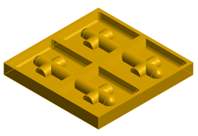
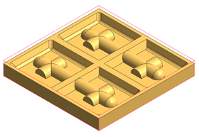

Display the part and blank geometry
-
In the Cavity Mill dialog box, in the Geometry group, in theSpecify Part row, click Display
 .
.

The part geometry is inherited from the WORKPIECE object.
-
Refresh the graphics window.
-
In the Specify Blank row, click Display
.

The blank geometry is also inherited from the WORKPIECE object.
-
Refresh the graphics window.